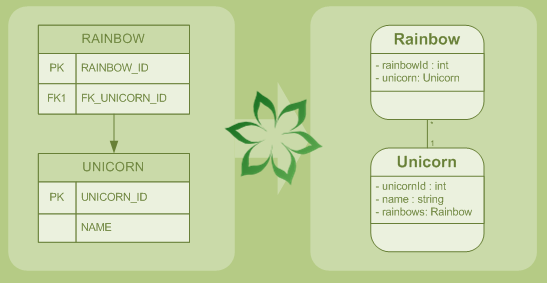

A tool for reverse-engineering a JPA 2.0 and/or Hibernate project from a JDBC database. It's a Maven plugin.
- Entity classes with JPA 2.0 annotations
- Hibernate mapping XML documents
- DAO interfaces and implementation classes based on Spring DAO templates
- Spring configurations for JPA EntityManager, Hibernate SessionFactory, DAO classes
- Unitils test cases (integration tests with database)
- DbUnit test data for test cases
- Maven POM with all dependencies
Basically, you reverse engineer the database using the Maven plug-in.